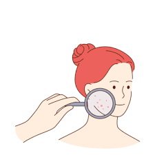

Eye Health
Problem: Common eye issues include dryness, strain, and irritation from long screen exposure.
Solution: Regular eye exercises, reduced screen time, and herbal remedies like cucumber slices or aloe vera help refresh and protect the eyes.
Skin Health
Problem: Skin problems include dryness, acne, and aging due to pollution and UV exposure.
Solution: Natural masks with turmeric and aloe vera, daily hydration, and sun protection improve skin health.
Hair Health
Problem: Hair issues like dryness, split ends, and hair loss are common due to harsh chemicals and pollution.
Solution: Regular oiling, avoiding heat tools, and using herbal remedies like hibiscus and coconut oil help maintain strong and shiny hair.